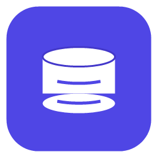

A high-performance desktop database client for modern serverless and distributed databases — Turso/libSQL, Cloudflare D1, CockroachDB, Neon, Supabase, MySQL/MariaDB, and AWS Aurora DSQL.
Every release ships a SHA256SUMS.txt covering all
artifacts. Compare your download against it before running:
# Linux / macOS sha256sum -c SHA256SUMS.txt # Windows PowerShell (Get-FileHash .\dbboard-desktop_0.5.0_x64-setup.exe -Algorithm SHA256).Hash
dbboard also ships dbboard-mcp, a headless
MCP server that hands the
connections you have already configured to an AI agent as a tool surface
over stdio. Reading is always on; writing stays off until you opt a
connection in, and privilege changes, TRUNCATE and
DROP are blocked either way. It reuses the same
connections.toml and OS keychain the app uses, so it adds no
new place to keep credentials, and secrets never cross the wire.
claude mcp add dbboard --scope user -- /path/to/dbboard-mcp
These binaries are not code-signed yet. Windows SmartScreen may warn about an "unknown publisher", and macOS Gatekeeper will ask you to confirm opening an app from an unidentified developer. This is expected for an unsigned open-source build — verify the checksum above, then allow it through. Signing is a tracked follow-up.